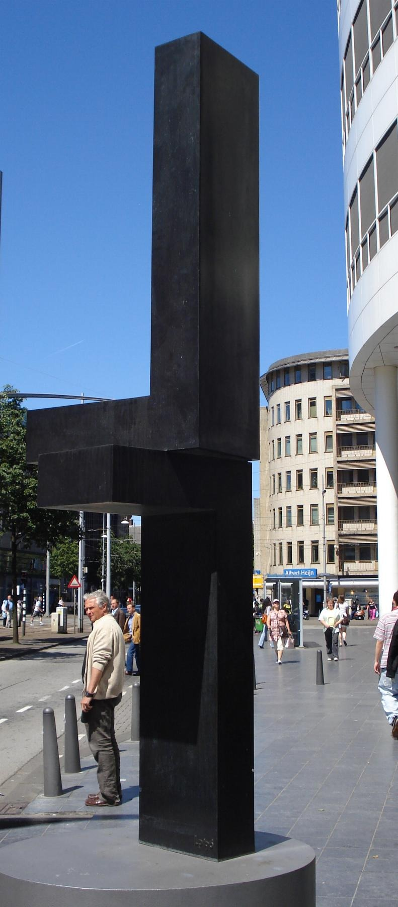

NODE // depth=3 // branched from: node-street-log-d3-20260318
street-log-01 // the intervention point // junction box
branch junction // follow the threads
NODE :: node-street-log-d3-20260318 // generated: 2026-03-18
the intervention point // where the coverage breaks
I mapped the two camera fields of view against each other. The crosswalk camera covers the intersection from the north side. The second camera covers the block from the second floor, east aspect. There is an overlap zone -- approximately a fifteen-meter section that falls within both fields of view, in theory, but that both cameras lose during their respective gaps.
The overlap zone is centered on a utility access point: a junction box mounted to the pole at the intersection, the kind used for traffic signal timing and, in some configurations, for communications infrastructure. I cannot confirm what that box is used for in this installation. I can confirm it exists, that it is in the overlap zone, and that both cameras lose their feed when something happens at the time associated with that zone.
I photographed the box from three angles on two different days. The box has markings consistent with telecommunications infrastructure rather than traffic management alone. On the second day it had a small scratch on the upper-left corner that was not there on the first day. The scratch is fresh. The paint is light-colored and the scratch shows the bare metal below. Something contacted that box between my two visits.

overlap zone mapped // junction box identified // scratch documented // 2026-03-18